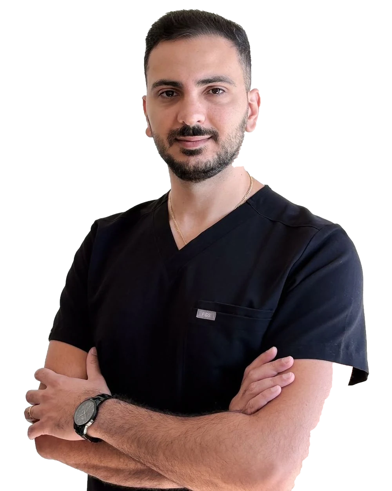
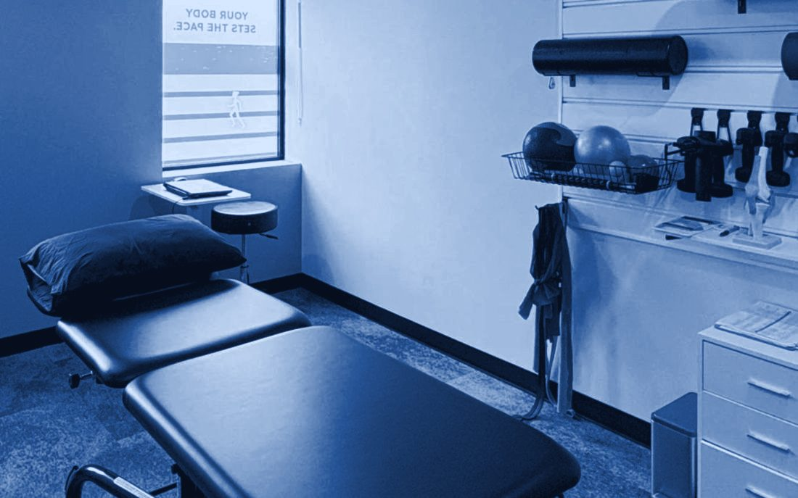
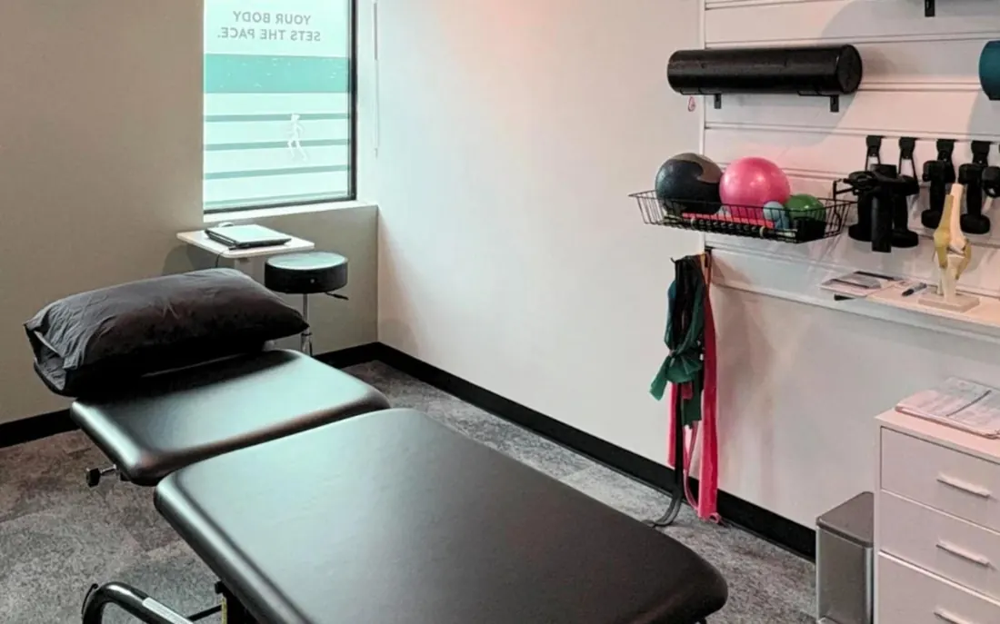
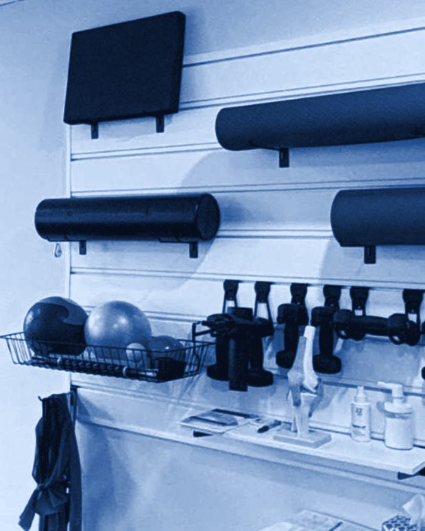
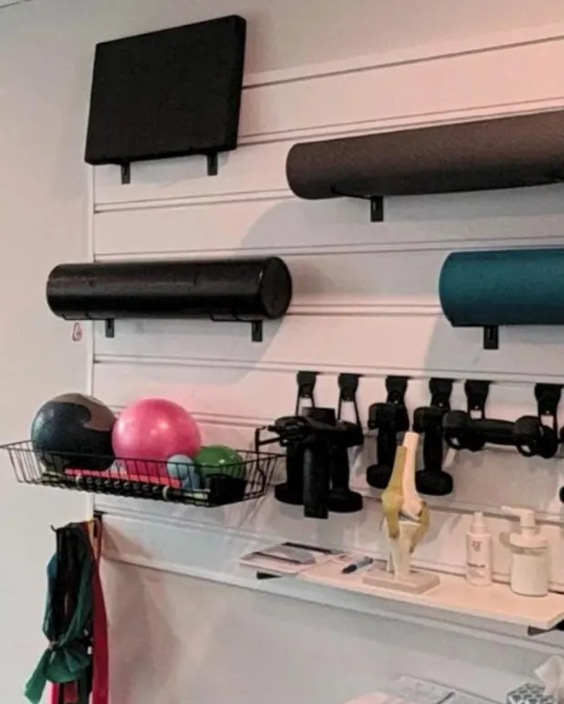
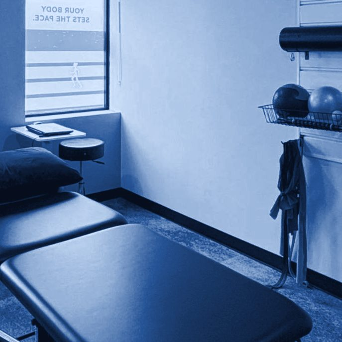
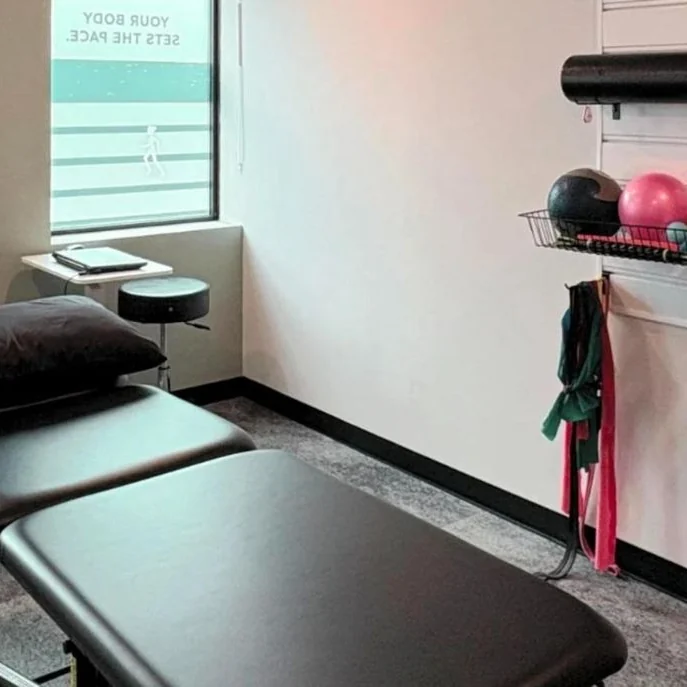

Abdallah Najem
Senior Registered Physiotherapist and Vestibular Therapist
I help people in Ottawa recover from injury, ease neck and back pain, and feel steady again when dizziness gets in the way.
Call 613-627-8808Please ask for Abdallah when booking
The inner ear, drawn in points. Its three canals sense every turn of your head.

Assessment first, every time
I’m Abdallah Najem, a Senior Registered Physiotherapist and Vestibular Therapist at Arro Wellness in Ottawa.
Over 12 years I have treated patients in Canada and Lebanon: athletes coming back from injury, desk workers whose neck tightens a little more each day, and people whose room spins when they turn their head.
Every session starts with an assessment of how you move. Then we treat what is holding you back with hands-on care, and finish with exercises so the progress lasts.
- 12
- years of clinical experience
- 2
- countries of practice: Canada and Lebanon
- 3
- credentials: BScPT, MSc Sports Rehab, DPT
- 4
- languages: English, Français, العربية, Español
Twenty-four vertebrae, drawn in points.
What I treat
Five areas of care, one approach: understand the cause, then work toward moving and feeling better.
Sports physiotherapy and rehab
We look at how the injury affects the way you move, then build a progressive plan of treatment and exercise to help you return to activity with confidence.
Orthopaedic physiotherapy
Neck, back or shoulder pain, muscle tension and stiffness that make work, sleep or everyday tasks harder.
Vestibular therapy
A vestibular assessment looks for what is driving the symptoms. Depending on the cause, specific head movements and balance exercises can help you feel steady again.
Shockwave therapy
Shockwave therapy is one of the treatments I offer. After your assessment, I will tell you whether it suits your situation and how it fits into your plan.
Soft tissue mobilization and manual therapy
This is not a massage. I first assess how you move, then use targeted hands-on techniques on the tissues that restrict you, then add exercises so the results last.
When the room spins
With BPPV, tiny crystals in the inner ear can drift out of place. Then a simple head turn sends a false signal, and the room seems to spin.
Vestibular therapy starts with an assessment to find what is driving the dizziness, then works toward a room that stays still.
The amber points are the crystals. Press the button and watch them tumble, then settle.
What to expect
Every visit follows the same order, so you always know where you are and why.
-
Assess
We talk about what you feel and what you want to get back to. Then I look at how you move, to find what is driving the problem, not only where it hurts.
-
Treat
Hands-on treatment targets what the assessment found: soft tissue mobilization, manual therapy and, when it suits, shockwave or vestibular techniques.
-
Exercise
You leave with a short set of exercises chosen for you, so the progress you make in the clinic keeps going at home.
Your care in your language
Pain and dizziness are hard enough to describe. You can do it in the language you are most comfortable with.
- Ask for AbdallahEnglish · Fluent
- Demandez AbdallahFrançais · Fluent
- اطلبوا عبداللهالعربية · Native
- Pregunte por AbdallahEspañol · Basic clinical
Common questions
Is soft tissue mobilization the same as massage?
No. Massage is mainly for relaxation. Soft tissue mobilization is part of a physiotherapy treatment: I first assess how you move, then use targeted hands-on techniques on the muscles and fascia that restrict you, then add exercises so the results last.
Why does my neck hurt after a day at my desk?
Sitting all day plays a part, but it is not only about posture. Limited movement, stiffness in the upper back and reduced strength in the deep neck flexors can all contribute. An assessment shows which of these matter for you, and treatment and exercises can help you work toward a more comfortable neck.
What should I do if the room spins when I move my head?
That spinning feeling is often linked to BPPV, an inner ear problem that vestibular therapy can help with. Book a vestibular assessment so the cause can be checked and treated. If dizziness comes on suddenly with new symptoms such as trouble speaking, weakness, numbness or a severe headache, call 911 right away.
How do I book with Abdallah?
Book online at any time, or call Arro Wellness at 613-627-8808 and ask for Abdallah.
Do you offer direct billing?
[DIRECT BILLING DETAILS: which insurers, and how it works at Arro Wellness] Call the clinic at 613-627-8808 to confirm for your plan.
What are your fees?
[FEES: initial assessment and follow-up visits] Call the clinic for current rates.
Find the clinic
Arro Wellness is at 102-1600 Laperriere Ave in Ottawa, close to Westboro, Carlington, Nepean and the Queensway.
Arro Wellness
102-1600 Laperriere Ave
Ottawa, ON K1Z 8P5
613-627-8808
info@arrowellness.ca
Hours: [CLINIC HOURS]






Book online, or call
Either way, please ask for Abdallah.